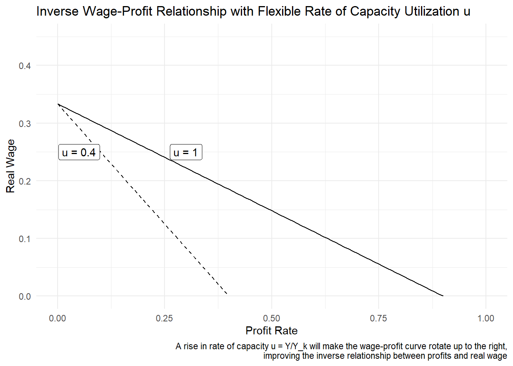
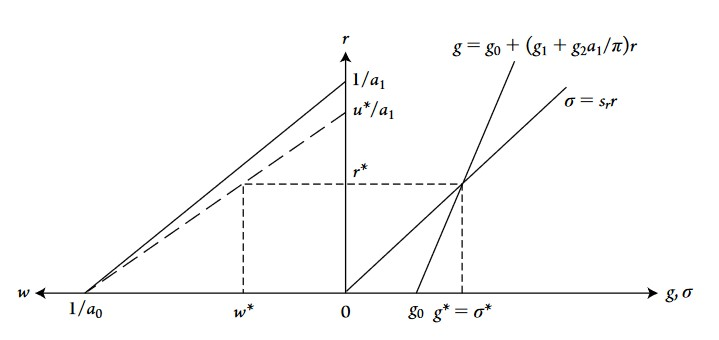
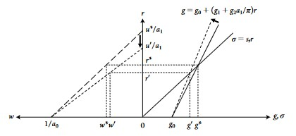

7 Kaleckian-Steindl Model
7.1 Preliminary Notes
7.1.2 Aggregate Demand
Aggregate demand is often summarized with the following accounting identity:
\[Y^d \equiv C+I+G+(X-M)\]
With \(Y^d\) aggregate demand, which depends positively:
\(C\), private consumption demand (by individuals, not firms nor the government, nor foreigners). \(C\) is the sum of all private consumption in a given economy.
\(I\), investment demand. The latter represents all purchases of capital goods by firms and all new residential investment. It includes mainly the purchase by firms of machinery, tools, raw materials and other equipment. However, residential investment (purchase of new houses) is also considered as an investment in national accounts.
\(G\), the demand coming from government purchases of goods and services.
\(X\), the demand coming from purchase by foreigners of national goods and services. It represents all exportation made by the economy. Subtracted by \(M\), which is imported goods and services, we get the trade balance.
Why is aggregate demand important? Because any increase in demand gives impetus to economic expansion: the higher the demand for goods and services, the more firms will want to respond by producing more. Demand does not mechanically accommodate to supply, as it is assumed in CMMs and NKMs. The idea that demand can never be a constraint to production is know as Say’s Law: demand will always accommodate supply because supply creates demand by itself. For instance, if I produce coffee beans, I will either consume it or want to trade it for other goods or services: my production has thus create at the same time my demand. It may sound paradoxical to say that CMMs and NKMs implicitly accepted Say’s Law or at least did not put it into question since Marx, Keynes and Post-Neo-Keynesian economists are famous for their critic of Say’s law.
Nonetheless, the Neo-Kaleckian models presented below are the firsts to really put Say’s Law into question and put aggregrate demand at the center. The (neo)-kaleckian models are thus very important among heterdox models of economic growth, because it the former incorporates the role of aggregate demand and its impact on growth, even in the long run.
7.2 Main characteristics of the model
7.2.1 Capacity rate of utilization
The main difference of the Neo-Kaleckian model with the CMMs and NKMs is that the Neo-Kaleckian model does not make the assumption that the capacity rate of utilization is fixed, constant, or constant at full level \(u = 1\). But what is the rate of capacity utilization already?
The rate of capacity utilization \(u\) is the ratio of actual output \(Y\) to the full-capacity output \(Y_k\), which is the output level when all capital is used in the economy. The capacity rate can be thus written as
\[u = \frac{Y}{Y_k}\] If we consider, as the CMMs and NKMs, that \(u = 1\), we simply say that \(Y = Y_k\). In other words, \(u = 1\) means that all capital is used in the production process in the economy. If, for instance, \(u = 0.5\), that means that actual output is only half of what it could be if all capital was used in production.
A major characteristics of the Neo-Kaleckian model is that the model considers that the capacity rate \(u\) is flexible and not equal to one: the level of output is thus never at its full capacity level, contrary to the previous models presented in the manual.
7.2.1.1 3 Reasons why u<1
Why does the Neo-Kaleckian model has such a conception of the capacity rate? There are three main reasons for which firms do not operate at full capacity (full utilization of capital).
Indivisibilities
Firms tend to purchase capital goods (machinery, raw materials, tools…) which can be obtained only in large and discontinuous units, and thus can be operated at less than 100 per cent of their potential.
Building ahead of demand
Since firms do not know and cannot know what the demand for their products will be in the future (fundamental uncertainty of the future), they will hold excess capacity (excess capital not used in production) in case if demand rise in the future. If firms did not hold excess capacity and if demand suddenly happened to rise, they would not be able to respond by increasing production.
Entry deterrence
Most large firms operate in a non-competitive (great number of competitive firms) framework, in which only a few large oligopolistic firms compete in the market. In this situation, these large firms will hold excess capacity as a weapon in case if new firms (new entrants) would want to enter the market as producers and compete with the established firms. Having excess capacity allows established firms to be able to rise production immediately and thus push price downwards to crush any potential new competitors.
7.2.2 Prices as markups over costs
In most models described until now, none of them had a precise model/equation describing how prices are set by firms. The Neo-Kaleckian has an explicit and precise definition of how prices are set. Recall that in the context of perfect competition, standard economic theory tells that prices are the result of the equilibrium between demand and supply. In the Neo-Kaleckian framework, markets are not perfectly competitive and firms have what economics call “market power”, that is, the power to influence prices and thus set the latter.
How will firms then set prices in the Neo-Kaleckian model? The manual presents the following price equation:
\[P = (1 + \tau)Wa_0\]
Which means that a firm will increase price \(P\) if it decides to rise its markup rate \(\tau\), or if nominal wage increase \(W\) (since nominal wage is a cost for the firm, note that here other costs are ignored for simplicity and only labor costs are taken into account), or if \(a_0 = \frac{L}{Y}\), the labor/output ratio increases. Here, \(Y\) refers to the output produced by the firm and \(L\) the amount of labor employed by the firm. The idea that prices are not determined by demand and supply equilibrium, but by markup over costs is called markup pricing.
Once the markup pricing equation is defined, it can be shown that the profit share \(\pi\) is a positive (monotonic) function of markup \(\tau\):
\[ \begin{aligned} \pi = \frac{P - Wa_0}{P} \\ = \frac{(1+\tau)Wa_0-Wa_0}{(1+\tau)Wa_0} \\ \pi = \frac{\tau}{1+\tau} \end{aligned} \]
Thus,
\[\pi = \frac{\tau}{1+\tau}\] The higher the markup \(\tau\), the higher the profit share.
What will influence change in the markup rate \(\tau\), and thus increase profit share and inequality? Kalecki and the manual give five main factors which will influence the markup (a + or - sign is added next to each factor to indicate whether it rises the markup or decreases it):
Industrial concentration (+)
The fewer the firms are in competition with each other, the less the market is competitive and the more firms have market power to increase prices through an increase in their markup.
‘Overheads’ or fixed costs (+)
By these overhead and fixed costs, we mean all the costs associated with machinery and equipment, management, maintenance (overhead labor), Research & Development expenses, intellectual property rights costs or debt service expenses. All these costs are taken into account by firms, which want to set price with a markup over these costs. If these costs increase, firms will also want to increase the markup to set a prices bringing enough revenues.
Sales effort (+)
When firms operate under an oligopolistic framework (few firms, low competition between firms), adverstising is important to increase the number of consumers. Moreover, adverstising is also useful for ’product differentiation”, that is, convincing consumers that the firm’s products are different than the other products offered in the market. Consumers would then be more disposed to consume the differentiated product at a higher price. Advertising is thus both a way to increase the number of consumers and a way to increase oligopolistic market power.
Strength of labour unions (-)
If workers within a firm have enough bargaining power, they may are able to capture parts of the firms’s potential profits. The degree of power workers can have depend on the existence and strength of labor unions: the more labor unions there are and the stronger and more well-organized and powerful they are, they more firms will have to share their value added, and thus decrease their markups.
External competition (-)
The more national firms are in competition with the rest of the world, the more competitive pressure they have to lower their price, and thus their markup.
7.2.3 New wage-profit relationship
As with the CMMs, we start with the definition of national income under the income approach: national income is the sum of capitalists and workers’ income (profits and wages, ignoring depreciation, no government, only one good):
\[PY = WL + rPK\] Dividing by \(PY\), we get a new inverse wage profit relationship:
\[w = \frac{1}{a_0} - \frac{a_1}{a_0} \frac{r}{u}\]
This equation is almost the same as the one we derived in the classical-marxian models. Since the CMMs assumed a full and constant capacity rate of utilization \(u = 1\), it does not appear in their wage-profit equation. However, \(u\) appears here in the denominator of the \(r/u\) fraction because it is assumed to be inferior to one (below full capacity) and flexible. In the equation above, wage appears to be a positive function of \(u\), but this is misleading since \(u\) and profit rate \(r\) are not independent of each other, meaning that if one of the two variables increases, the other will change as well, leaving an ambiguous impact on real wage \(w\).
The graph above shows the inverse wage-profit relationship when the capacity rate is equal to one (u = 1), as in the CMMs, and when it is inferior to one, as in the Neo-Kaleckian models. A rise in u allows for both the profit rate and the real wage to rise.
Recall that real wage \(w\) is \(W/P\). By replacing \(P\) by the price equation we saw above (\(P = (1 + \tau)Wa_0\)), we can see how the real wage is related to income distribution and inequality:
\[ \begin{aligned} w = \frac{W}{P} = \frac{W}{(1+\tau)Wa_0} = (\frac{1}{1+\tau})\frac{1}{a_0} \\ w = \frac{1 - \pi}{a_0} \end{aligned} \]
To sum up, we have
Real wage as a positive function of wage share \(\psi = 1-\pi\), labor productivity \(1/a_0\), utilization rate \(u = Y/Y_K\) and negative with profit rate \(r\)
- \(w = \frac{1 - \pi}{a_0}\)
- \(w = \frac{1}{a_0} - \frac{a_1}{a_0} \frac{r}{u}\)
Profit rate as a positive function of profit share \(\pi\), utilization rate \(u\), and capital productivity \(1/a_1\); and profit share \(\pi\) as a positive function of markup \(\tau\)
- \(r = \frac{\pi u}{a_1}\)
- \(\pi = \frac{\tau}{1+\tau}\)
7.3 Model Solution and Equilibrium
As usual, the equilibrium values of our variables of interest (growth rate, profit rate, real wage…) will be determined by the equilibrium between savings and investment. To do so, we must first define the saving and investment functions.
7.3.1 Saving function
The saving function is essentially the same as in the NKMs: all savings come out of profits (no savings out of wages):
\[\sigma = s_rr\] Assuming that:
- All savings come out of profits
- Closed economy (no foreign trade)
- No government
7.3.2 Investment function
Unlike the saving function, the Neo-Kaleckian function has a major difference with NKMs. The difference is that investment is now not only a positive function of actual profits \(r\), but also of the capacity rate of utilization \(u\):
\[g = g_0+g_1r+g_2u\]
Recall that the Neo-Robinsonian model considered that investment was a positive function, not of realized profits, but of expected profits. The Neo-Kaleckian model considers that investment if a positive function of actual profits because the latter influences investment decisions by relieving financial and liquidity constraints.
Regarding the capacity rate \(u = Y/Y_k\), if this variable increases (meaning that a given firm is utilizing more unused capital, for instance to catch up with a rise in demand), firms will want to invest more to keep excess capacity (recall that firms in this model want to keep a certain level of excess capacity, the reasons are listed at the beginning).
Replacing \(u\) using the profit equation \(r = \frac{\pi u}{a_1}\), the investment function can be written as a function of profit rate and profit share:
\[g = g_0+(g_1+g_2a_1/\pi)r\]
7.3.3 Saving-Investment Equilibrium
7.3.3.1 Deriving Equilibrium
Equalizing Investment and Savings equation, we get:
\[ \sigma = g \]
Replacing \(\sigma\) and \(g\) by their respective definition, we get:
\[s_rr= g_0+g_1r+g_2u\]
Then we replace the profit rate \(r\) by \(\frac{\pi u}{a_1}\):
\[s_r\frac{\pi u}{a_1}= g_0+g_1\frac{\pi u}{a_1}+g_2u\]
Solving for (isolating on the left) the capacity rate \(u\), we get:
\[ u^* = \frac{g_0}{(s_r-g_1)(\pi/a_1)-g_2} \]
The equilibrium capacity rate is thus a positive function of \(g_0\) (firms’ confidence in the economy), of \(g_2\) (effect of a one unit increase in \(u\) on investment), of \(g_1\) (degree of positive response of profit rate on investment)
On the other hand, \(u^*\) is negative function of \(\pi\) (profit share), and of \(a_1\) (and thus positive function of labor productivity \(1/a_1\)).
The equilibrium profit rate is:
\[ r^* = \frac{g_0 (\pi / a_1)}{(s_r-g_1)(\pi / a_1)-g_2} \]
The latter increase with: \(g_0, g_1, g_2\) and decrease with \(s_r\).
Equilibrium savings and investment are:
\[ g^*=\sigma^*=\frac{s_r g_0(\pi/a_1)}{(s_r-g_1)(\pi /a_1)-g_2} \]
Which are thus positive functions of \(g_0, g_1, g_2\)
7.3.3.2 Vizualizing Equilibrium
The Neo-Kaleckian model can be graphed using the three main equations of the model:
Real Wage: \(w = \frac{1}{a_0} - \frac{a_1}{a_0} \frac{r}{u}\)
Savings: \(\sigma = s_rr\)
Investment: \(g = g_0+(g_1+g_2a_1/\pi)r\)

Some remarks about the graph above and the main equations:
- The more firms have excess capacity, the more \(u\) will be inferior to one, and the more the curve on the left (wage-profit curve) will rotate down to the right (because the intercept on the r axis will go down).
- Rates of utilization \(u\) , profit rate \(r\) and real wage \(w\) are mutually and simultaneously determined.
- A rise in profit share \(\pi\) will make the investment curve rotate to the left.
- A rise or fall in wage and profit share depends on technology and markup.
7.4 Main Results of the Neo-Kaleckian model
The main implication of the Neo-Kaleckian (Kalecki-Steindl) model is that faster economic growth can be achieved through a more equal distribution of income, rising real wage and profit rates. These conclusions of the model are very different from CMMs and NKMs, in which faster growth can only happen with greater inequality.
This stand is sharp contrast with the CMMs and NKMs, which tell that faster growth comes at the expense of real wages, wage share and thus with more inequality. The difference lies in the fact that, in most CMMs and NKMs, the rate of capacity utilization is considered constant at full level \(u = 1\), so that a simultaneous increase in profit rates, real wage and growth can happen only if there is technological change (except a Marx-biased technological change), which is also considered exogenous.
This Neo-Kaleckian model thus implies that growth can be wage-led, which means that faster growth can be achieved with a more equal distribution of income: higher real wage and wage share allow for faster growth. We arrived to this result mainly by introducing markups in the model and a flexible capacity rate.
But what is the logic behind wage-led growth? Think for example of what would happen if the profit share rises in an economy. A rise in profit share implies a redistribution of income from wages to profits. Since, in this model, 100% of wages are consumed whereas only a fraction of profits are consumed (\(1-s_r\)), a rise in profit share reduces total consumption demand in the economy. A fall in consumption demand will then slow down growth, because there are less outlets for finished products and services to be sold and consumed. Note that this mechanism looks a lot to underconsumption theory expressed by some Marxists.
Keep in mind that it could be possible for a fall consumption (due to a fall in real wage) to be offset by a rise in investment (firms have more income, and thus can invest more). In this model, not only this is not possible, but if the profit share rises (and wage share declines), even investment itself falls because of a fall in utilization rate and realized profits. This is a paradoxical result in which there is an inverse relationship between profit share and profit rates. Bhaduri and Marglin (1990) argue that the specification of the investment function, which double counts the capacity rate, is the reason behind this paradox. But logically, this paradox is due to the fact that, when profit share \(\pi\) rises, the negative effect of the decline in consumption demand out of wages is so strong that capacity rate \(u\) falls more than profit share \(\pi\) rises, making the profit rate \(r = \pi u/a_1\) fall.
The graph below shows the negative effect of rise in the profit share. The investment curve \(g\) rotates to the left and the wage-profit curve rotates down to the right:

7.5 Conclusion
This Neo-Kaleckian model, also called Kalecki-Steindl model, has strong differences with CMMs and NKMs. First, the rate of capacity utilization \(u = Y/Y_k\) is considered flexible, inferior to one, and has a positive impact on investment. Second, the model defines prices and profit share as positive functions of markup \(\tau\), which depends on the five factors listed at the beginning of this chapter. A higher markup leads to higher profit share, lower growth, real wage, wage share, utilization rate, and higher unemployment. The model introduces two important assumptions/ideas: (1) flexible capacity rate and (2) markup pricing.
Finally, the Kalecki-Steindl model is a good illustration of the negative effects of the increase in industrial concentration (increase in monopoly, decrease in competition) and that the latter can lead to economic stagnation. Regarding the effect of an increase in propensity to save \(s_r\), or a rise in confidence \(g_0\), the model leads to conclusions similar (but not totally) to NKMs: a rise in \(s_r\) (propensity to save out of profits) reduces equilibrium level of capacity rate \(u^*\), profit rate \(r^*\), and investment \(g^*\). An increase in \(g_0\) has the opposite effects. The difference with NKMs is that \(u\) is affected in this Kalecki-Steindl model, but is not in the NKMs.
In the next chapter, we will see models which are developments of this basic Neo-Kaleckian model. More precisely, we will see that an economy can not always be wage-led, but also profit-led or export-led when we introduce saving propensity out of wages, change the specification of the investment function and introduce foreign trade.
Asimakopulos, A. 1975. “A Kaleckian Theory of Income Distribution.” The Canadian Journal of Economics / Revue Canadienne d’Economique 8 (3): 313–33. https://doi.org/10.2307/134236.
Bhaduri, Amit, and Stephen Marglin. 1990. “Unemployment and the Real Wage: The Economic Basis for Contesting Political Ideologies.” Cambridge Journal of Economics 14 (4): 375–93. https://doi.org/10.1093/oxfordjournals.cje.a035141.
Blecker, Robert A., and Mark Setterfield. 2019. Heterodox Macroeconomics: Models of Demand, Distribution and Growth. Cheltenham, UK ; Northampton, MA, USA: Edward Elgar Publishing Ltd.
Harris, Donald J. 1974. “The Price Policy of Firms, the Level of Employment and Distribution of Income in the Short Run*.” Australian Economic Papers 13 (22): 144–51. https://doi.org/10.1111/j.1467-8454.1974.tb00879.x.
Kalecki, M. 1943. “Political Aspects of Full Employment1.” The Political Quarterly 14 (4): 322–30. https://doi.org/10.1111/j.1467-923X.1943.tb01016.x.
———. 1954. Theory of Economic Dynamics: An Essay on Cyclical and Long-Run Changes in Capitalist Economy.